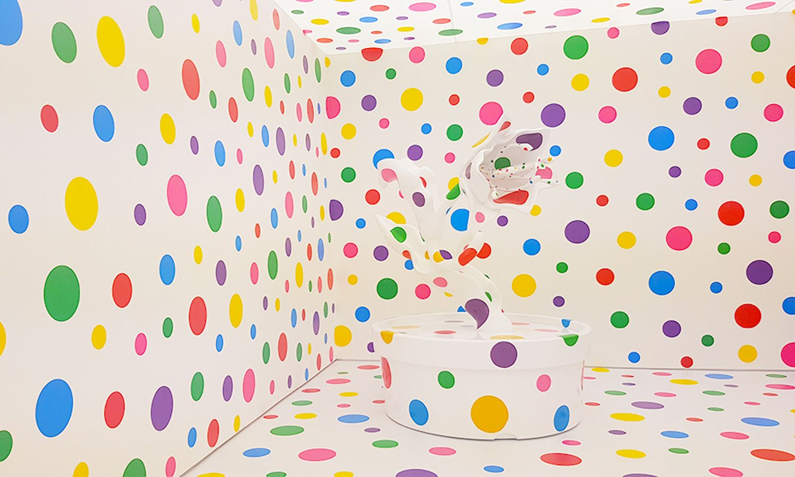

After living in Tokyo and France, Kusama left Japan at the age of 27 for the United States. She has stated that she began to consider Japanese society "too small, too servile, too feudalistic, and too scornful of women". In 1957, she moved to Seattle, where she had an exhibition of paintings at the Zoe Dusanne Gallery. She stayed there for a year before moving on to New York City, following correspondence with Georgia O'Keeffe in which she professed an interest in joining the limelight of the city, and sought O'Keeffe's advice. During her time in the US, she quickly established her reputation as a leader in the avant-garde movement and received praise for her work from the anarchist art critic Herbert Read.
In 1961 she moved her studio into the same building as Donald Judd and sculptor Eva Hesse; Hesse became a close friend. In the early 1960s Kusama began to cover items such as ladders, shoes and chairs with white phallic protrusions. Despite the micromanaged intricacy of the drawings, she turned them out fast and in bulk, establishing a rhythm of productivity which she still maintains. She established other habits too, like having herself routinely photographed with new work and regularly appearing in public wearing her signature bobbed wigs and colorful, avant-garde fashions.
Since 1963, Kusama has continued her series of Mirror/Infinity rooms. In these complex infinity mirror installations, purpose-built rooms lined with mirrored glass contain scores of neon-colored balls, hanging at various heights above the viewer. Standing inside on a small platform, an observer sees light repeatedly reflected off the mirrored surfaces to create the illusion of a never-ending space.
During the following years, Kusama was enormously productive, and by 1966 she was experimenting with room-size, freestanding installations that incorporated mirrors, lights, and piped-in music. She counted Judd and Joseph Cornell among her friends and supporters. However, she did not profit financially from her work. Around this time, Kusama was hospitalized regularly from overwork, and O'Keeffe convinced her own dealer Edith Herbert to purchase several works to help Kusama stave off financial hardship. Many men artists copied her creativity, which made the men famous, but not Kusama. Thus, she was not able to make the money she believed she deserved. This frustration became so extreme that she attempted suicide.
In the 1960s, Kusama organized outlandish happenings in conspicuous spots like Central Park and the Brooklyn Bridge, often involving nudity and designed to protest the Vietnam War. In one, she wrote an open letter to Richard Nixon offering to have sex with him if he would stop the Vietnam war. Between 1967 and 1969 she concentrated on performances held with the maximum publicity, usually involving Kusama painting polka dots on her naked performers, as in the Grand Orgy to Awaken the Dead at the MoMA (1969), which took place at the Sculpture Garden of the Museum of Modern Art. During the unannounced event, eight performers under Kusama's direction removed their clothing, stepped nude into a fountain, and assumed poses mimicking the nearby sculptures by Picasso, Giacometti, and Maillol.
In 1968, Kusama presided over the happening Homosexual Wedding at the Church of Self-obliteration at 33 Walker Street in New York and performed alongside Fleetwood Mac and Country Joe and the Fish at the Fillmore East in New York City. She opened naked painting studios and a gay social club called the Kusama 'Omophile Kompany (kok).
The nudity present in Kusama's art and art protests was severely shameful for her family. This made her feel alone, and she attempted suicide again.
In 1966, Kusama first participated in the Venice Biennale for its 33rd edition. Her Narcissus Garden comprised hundreds of mirrored spheres outdoors in what she called a "kinetic carpet". As soon as the piece was installed on a lawn outside the Italian pavilion, Kusama, dressed in a golden kimono, began selling each individual sphere for 1,200 lire (US$2), until the Biennale organizers put an end to her enterprise. Narcissus Garden was as much about the promotion of the artist through the media as it was an opportunity to offer a critique of the mechanization and commodification of the art market.
During her time in New York, Kusama had a brief relationship with artist Donald Judd. She then began a passionate, but platonic, relationship with the surrealist artist Joseph Cornell. She was 26 years his junior – they would call each other daily, sketch each other, and he would send personalized collages to her. Their lengthy association would last until his death in 1972.